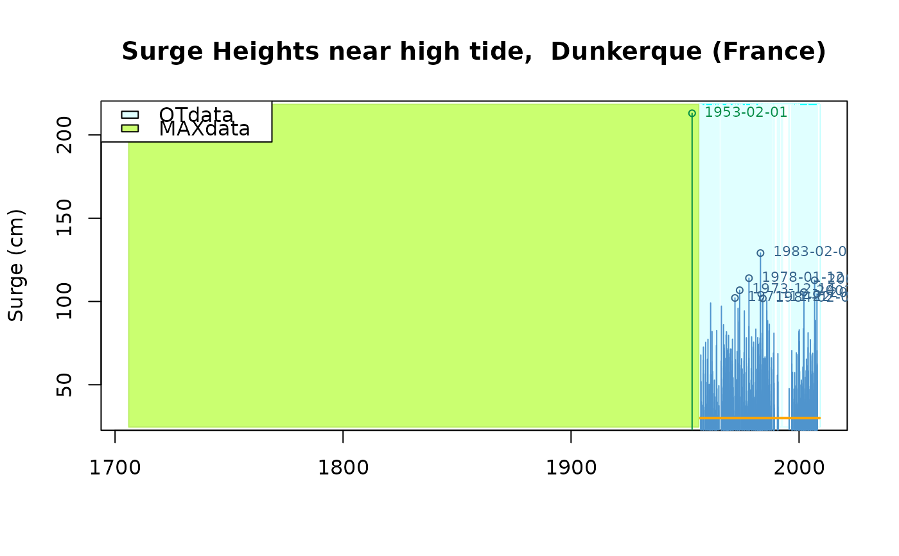

Surge heights at Dunkerque
Dunkerque.RdSurge heights near high tide at Dunkerque tide gauge station (France)
Format
The format is: List of 7
$info: List of 6$name: chr"Dunkerque"$shortLab: chr"Surge Heights at Dunkerque (France)"$longLab: chr"Surge Heights near high tide, Dunkerque (France)"$varName: chr"Surge"$varShortLab: chr"Surge"$varUnit: chr"cm"
$describe: chr"High tide sea surge over 30 cm at Dunkerque... "$OTinfo: List of 4$start: POSIXct[1:1], format:"1956-01-01"$end: POSIXct[1:1], format:"2009-01-01"$effDuration: num 38.8$threshold : num "30"
$OTdata: 'data.frame': 740 obs. of 3 variables:$date: POSIXct[1:740], format:"1956-11-27" "1956-12-03"...$Surge: num [1:740]67.9 30.9 51.8 30.8 39.8...$comment: chr [1:740]"" "" "" ""...
$OTmissing: 'data.frame': 83 obs. of 3 variables:$start: POSIXct[1:83], format:"1956-01-01" "1956-08-08"...$end: POSIXct[1:83], format:"1956-06-07" "1956-11-03"...$comment: chr [1:83]"" "" "" ""...
$MAXinfo: 'data.frame' : 1 obs. of 3 variables:$start: POSIXct[1:1], format:"1706-01-01"$end: POSIXct[1:1], format:"1956-01-01"$duration: num250
$MAXdata:'data.frame': 1 obs. of 4 variables:$block: int1$date: POSIXct[1:1], format:"1953-02-01"$Surge: num213$comment: chr"1"
-
attr(*, "class")= chr "Rendata"
Details
See Brest and Garonne datasets with the
same list structure.
An 'historical' surge of 213 cm was observed on 1953-02-01 and is considered by experts as having a return period of 250 years.
Examples
Dunkerque$info
#> $name
#> [1] "Dunkerque"
#>
#> $shortLab
#> [1] "Surge Heights at Dunkerque (France)"
#>
#> $longLab
#> [1] "Surge Heights near high tide, Dunkerque (France)"
#>
#> $varName
#> [1] "Surge"
#>
#> $varShortLab
#> [1] "Surge"
#>
#> $varUnit
#> [1] "cm"
#>
plot(Dunkerque)
